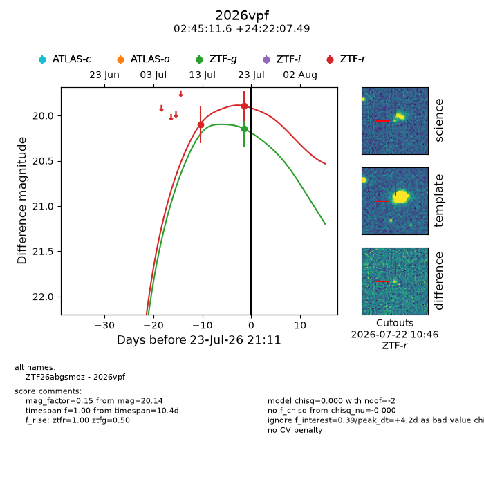
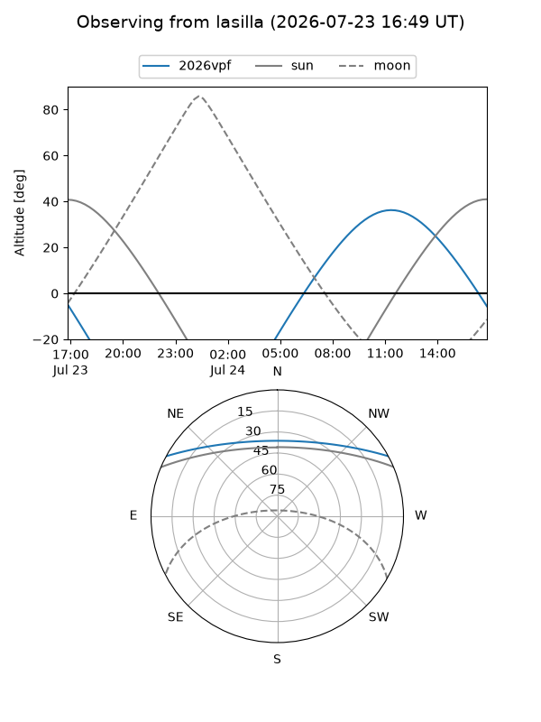
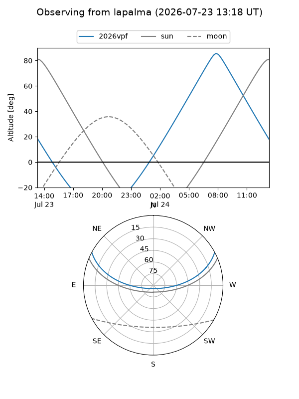
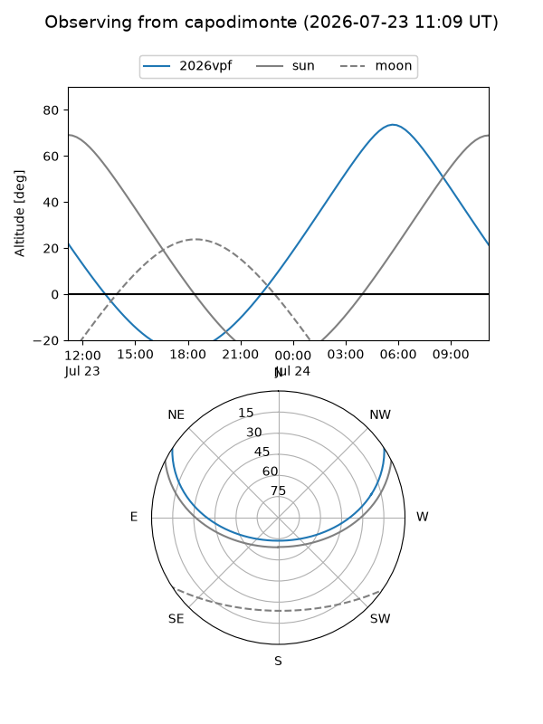
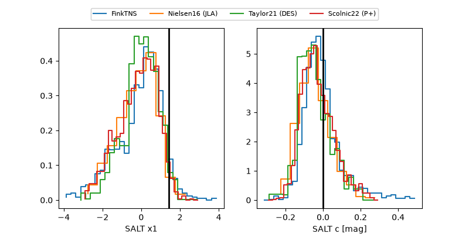

2026vpf
Target 2026vpf at 2026-07-23 21:14
Aliases and brokers:
FINK-ZTF: ztf.fink-portal.org/ZTF26abgsmoz
Lasair-ZTF: lasair-ztf.lsst.ac.uk/objects/ZTF26abgsmoz
ALeRCE-ZTF: alerce.online/object/ZTF26abgsmoz
YSE-PZ: ziggy.ucolick.org/yse/transient_detail/2026vpf
TNS name: wis-tns.org/object/2026vpf
Direct TNS query: direct search
alt names
ZTF26abgsmoz (ztf,fink_ztf)
2026vpf (tns,yse)
Coordinates:
equatorial (ra, dec) = 41.2985,+24.36875
equatorial (HMS+DMS) = 02:45:11.63,+24:22:07.49
galactic (l, b) = (153.5681,-31.64969)
Flags:
peak dt: +4.2
Photometry:
last ztfg=20.14, ztfr=19.89
1 ztfg, 2 ztfr detections
Lightcurve

Visibility



Additional plots
